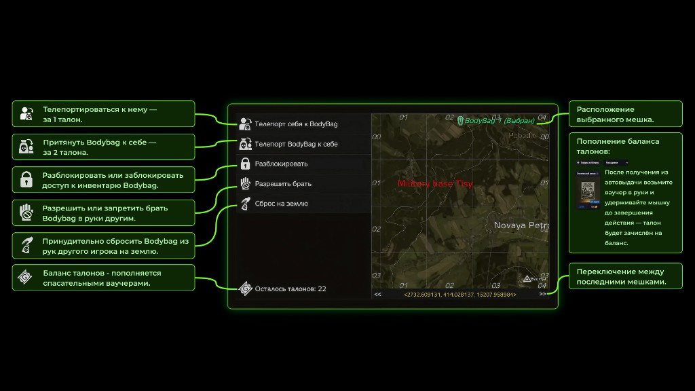

Телепортироваться к мешку
Перемещение к вашему BodyBag за 1 талон.
Информация по механике восстановления лута после смерти и работе с талонами.

Перемещение к вашему BodyBag за 1 талон.
Телепорт мешка к вашему персонажу за 2 талона.
Можно разблокировать или заблокировать доступ к инвентарю BodyBag.
Можно разрешить или запретить другим игрокам брать BodyBag в руки.
Можно принудительно сбросить BodyBag из рук другого игрока на землю.
Панель поддерживает переключение между последними мешками.
Баланс талонов пополняется спасательными ваучерами.
После получения из автовыдачи возьмите ваучер в руки и удерживайте кнопку мыши до завершения действия — талон зачислится на баланс.
💡 Чтобы открыть панель, назначьте удобную клавишу в настройках управления (раздел привязки клавиш - "Gelik Mods").